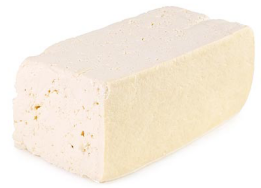

Q: What food do you recommend that fits under your $HLT
acronym?
A: hmm off thre top of my head probably this:

you maybe mistake it for congealed bird shit but actuale this is call "tofu" apparenetly japansed people eat this? prooff of tofru effectiveness is japanse are fit people, ie. when is last time you see fat japansesr person?????? exactrly.